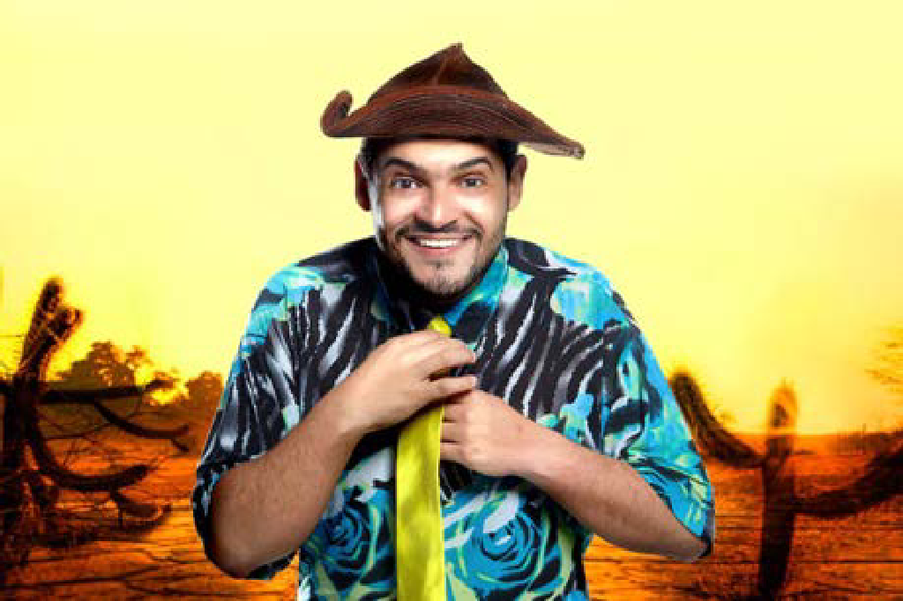

Por que marcas estão investindo em comédia e stand-up no Brasil

Enquanto formatos publicitários tradicionais perdem atenção a cada ano, um gênero específico vem crescendo de forma silenciosa e consistente dentro do orçamento de marketing das marcas brasileiras: a comédia. Não como piada avulsa em uma campanha, mas como estratégia — publis com comediantes, patrocínio de turnês de stand-up, embaixadores de marca e ativações dentro de teatros lotados.
O motivo é simples: 78% dos brasileiros consomem filmes e séries de comédia, e o stand-up comedy deixou de ser nicho para se tornar um dos gêneros de entretenimento mais assistidos do país. Quando uma marca aparece dentro desse contexto — através de um comediante que o público já confia e já ri — a mensagem chega com menos resistência do que um anúncio tradicional.
A atenção mudou de lugar
Hoje, boa parte do consumo de entretenimento no Brasil acontece fora da grade de TV aberta: em redes sociais, em plataformas de streaming e, cada vez mais, em teatros. Os comediantes que lideram esse movimento carregam audiências próprias, engajadas e fiéis — muitas vezes maiores e mais ativas do que veículos de mídia tradicionais.
Isso muda o cálculo de quem investe em comunicação. Em vez de comprar espaço em um canal, a marca passa a se associar a uma pessoa que o público já escolheu seguir, assistir e recomendar.
Os formatos que funcionam
Na prática, marcas têm usado o humor de algumas formas específicas:
- Publis pontuais e pacotes de conteúdo — o comediante cria uma peça original incorporando a marca dentro da própria linguagem dele.
- Embaixadores de marca — parcerias de médio e longo prazo, com presença recorrente do artista na comunicação da empresa.
- Patrocínio de turnês e especiais — exposição de marca em shows ao vivo, muitas vezes com ativações e sampling no hall do teatro.
- Eventos corporativos com humor — apresentações e palestras com comediantes para equipes internas, unindo entretenimento e comunicação interna.
Curadoria é o que faz a diferença
O maior risco desse tipo de estratégia não é o humor em si, mas o descompasso entre artista, marca e público. Um comediante que fala fundo de teatro para adultos não necessariamente conversa com o público de uma marca infantil, por exemplo. Por isso, curadoria orientada por dados — faixa etária da audiência, região, tom de humor, plataformas de maior força — é o que separa uma parceria que gera resultado real de uma que só gera ruído.
É esse cruzamento entre relevância cultural e dados de audiência que guia o trabalho da M.A Produções na hora de recomendar o artista certo do nosso elenco para cada tipo de campanha ou evento.
Quer levar humor para a sua marca?
Fale com o time da M.A Produções e entenda qual comediante do nosso elenco faz mais sentido para o seu público e objetivo.
Fale com a gente